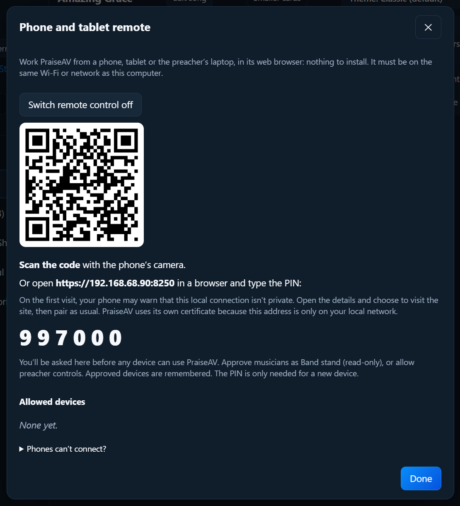
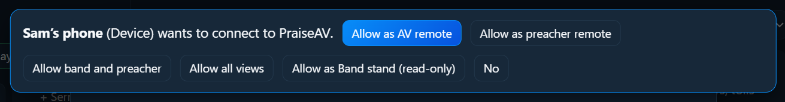
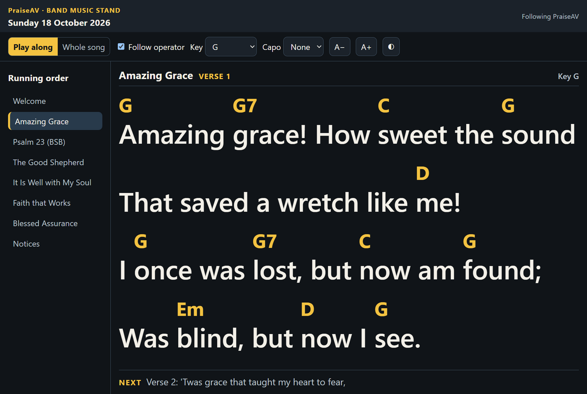
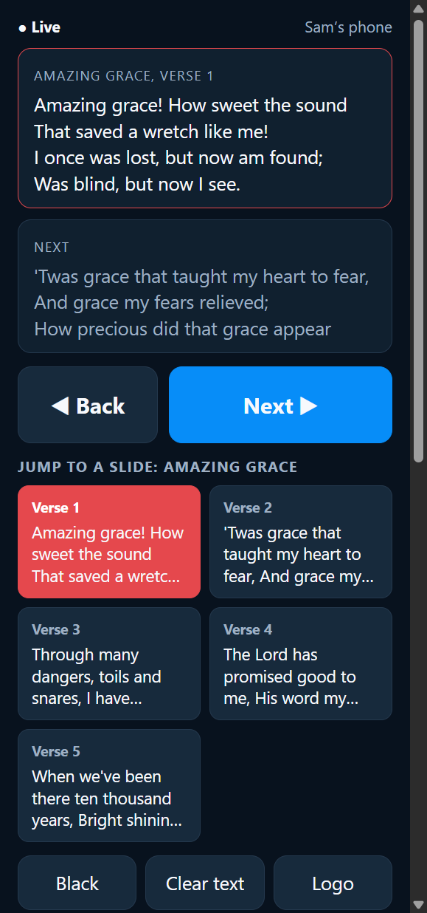
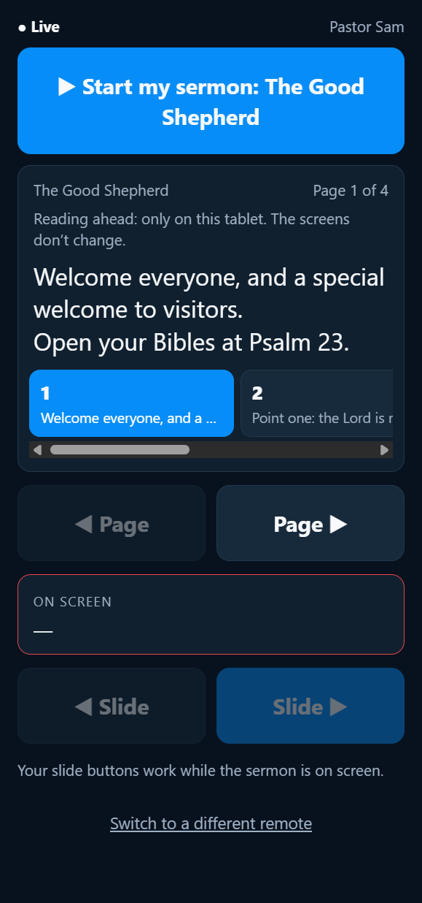

Screens and livestream
Phone and tablet remote
Anyone you allow can use PraiseAV from a phone, tablet or laptop, in its web browser. Nothing to install, and it works on Android, iPhone, iPad and laptops.
- An AV remote does what the desk does: Next, Black, Logo, any slide in the service.
- A preacher remote moves the current sermon’s slides and notes, shows the timer, and controls its video/music cues.
- Band and preacher views combines these two views with one remembered approval.
- All views is for one trusted tablet that does everything: it works as an AV remote and switches itself to the preacher’s view or the band stand, with no one at the computer.
- A Band stand shows the running order and song charts, follows the operator’s current song and slide, and cannot control PraiseAV.
Switching it on
- Click Remote at the top right of PraiseAV.
- Click Switch remote control on.

Connecting a phone
- The phone must be on the same Wi-Fi as the PraiseAV computer.
- Scan the code with the phone’s camera. Or type the
https://address shown into the phone’s browser, then the PIN. The first time, Android or iPhone may warn that this local certificate is not recognised: open the details and choose to visit the site. - Type a name (“Pastor Sam”) and tap Connect.
- On the PraiseAV computer, a message asks about it. Click Allow as AV remote, Allow as preacher remote, Allow as Band stand (read-only), Allow band and preacher, Allow all views, or No.

Nobody can control PraiseAV until you allow them at the desk. The PIN changes each time remote control is switched on.
Allowed devices are listed under Allowed devices. Next time, they connect straight away. Remove stops one. After updating from an older HTTP version of PraiseAV, pair each phone again once so its old connection key is replaced.
For a musician, choose Band stand (read-only). The tablet opens on Play along: the slide that is on the screen now, as big as fits, with its chords above the words in the key the band plays, and the next slide underneath. It changes by itself as the AV desk moves on, so there is nothing to scroll. Songs without chords saved in PraiseAV show just the words. The running order stays at the side, and each musician can set a personal key, capo and text size (A− and A+) without changing the congregation slide. Tap a song in the running order, or untick Follow operator, to read through its whole chart; tap Play along to go back to following the AV desk. Bookmark the page for later Sundays; reconnecting does not need a new approval while that tablet remains in Allowed devices. The Suite offline Band Music Stand file remains available for rehearsal away from the church network.

The AV remote

- ◀ Back and Next ▶, big.
- Black, Clear text, Logo.
- What’s on screen now.
- The Service: tap any item, then any slide.
- For sermons: ◀ Notes and Notes ▶.
The preacher remote

- ▶ Start my sermon: puts the sermon on screen, for when there’s no one at the laptop. It shows whenever the sermon isn’t on screen, and asks before it does anything.
- Reading ahead: before the sermon, the remote shows the notes for the sermon that’s next, with ◀ Page and Page ▶. Paging here only changes the tablet: the preacher’s screen and the congregation screen stay as they are, so the preacher can read through the notes during the songs. During the sermon, Read ahead (only on this tablet) does the same, and Back to the live notes returns to the shared page.
- ◀ Slide and Slide ▶ for the congregation slides (while the sermon is on screen).
- ◀ Notes and Notes ▶, with the notes themselves on the phone or laptop.
- Play/Pause, From start and Stop when the current sermon slide is a video or music cue.
- The timer, which turns amber and then red, like the preacher’s screen.
A preacher with a laptop on the lectern can use it as a notes screen and a clicker together.
No one free for the laptop? See Running a service without an AV volunteer.
Leading worship and preaching from one phone
Choose Allow band and preacher once at the desk. The tablet opens Band view; tap Preacher view for notes and sermon controls, then Band view to return. You do not need to assign the tablet to a particular sermon or repeat pairing each Sunday. A preacher-approved tablet is trusted to use the current sermon and read its notes. Band-only tablets cannot read notes or change slides.
For someone who runs the service from a tablet and also preaches or plays, choose Allow all views (or All views (AV, preacher and band stand) under Allowed devices). The tablet opens as the AV remote. At the bottom of the AV remote and the preacher’s view there are buttons to switch to the other two views; on the band stand, tap Preacher view or AV remote in the toolbar. It has full control of the service, so give it only to a tablet you would trust at the desk.
Only choose AV remote if that person needs control over the whole service. The AV operator can take over at any time. To change an existing approval, use Remote → Allowed devices.
Forget this phone (or Switch to a different remote on a preacher remote) takes the phone off the list; it then has to join again.
If the laptop’s battery is low
The remotes show Laptop battery 25%: plug it in at the top when the laptop is running low on battery.
Phones can’t connect?
- Same network: guest Wi-Fi often keeps devices apart. Use the staff Wi-Fi.
- The first time, Windows asks on the PraiseAV computer whether to allow PraiseAV on private networks: choose Allow.
- Wi-Fi with no internet: the phone may switch to mobile data. On Android, tap Stay connected when asked. On iPhone, turn mobile data off while using the remote.
- A computer with no Wi-Fi (most desktops): plug it into the church’s Wi-Fi router with a network cable. The cable and that router’s Wi-Fi are one network, so phones on the Wi-Fi can reach it.
- No Wi-Fi at all? A cheap Wi-Fi router (about £20–30) works with no internet line: plug the PraiseAV computer into it with a cable and join the phones to its Wi-Fi. Windows’ Mobile hotspot (Settings › Network & internet) may work on a laptop too, but Windows often won’t start it unless the laptop is already on a network, so try it before relying on it. See Wi-Fi for phones.